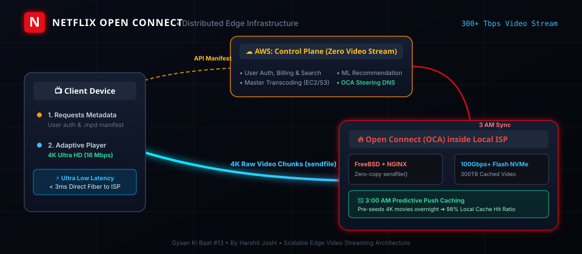
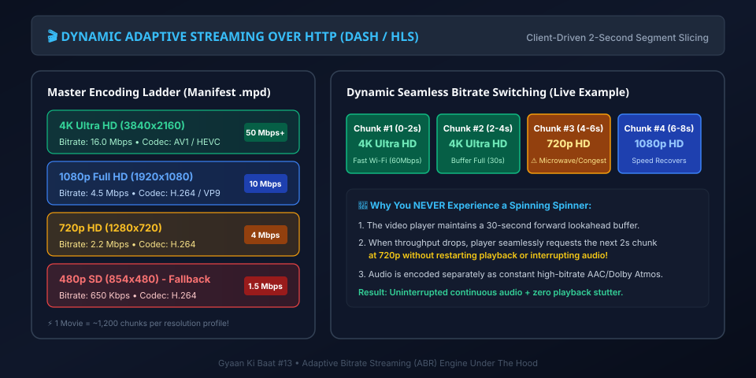

When you hit "Play" on Stranger Things in 4K Dolby Vision, you are streaming over 16 Megabits of data every single second. Multiply that by 260+ million active subscribers streaming across 190 countries simultaneously, and Netflix is responsible for roughly 15% of all global downstream internet traffic.
Yet, you almost never see a buffering wheel. How does Netflix push 300+ Terabits per second across the globe without paying billions in cloud egress fees or choking the public internet? The answer is a masterclass in distributed engineering: Open Connect and Dynamic Adaptive Streaming over HTTP (DASH).

Figure 1: Custom Netflix Open Connect Appliance (OCA) server rack deployed directly inside local ISP data centers around the world.
1. The Big Lie: "Netflix Runs 100% on AWS"
For years, tech media repeated the headline that "Netflix migrated entirely to Amazon Web Services." While technically true for software logic, it misses the most critical architectural nuance in computer engineering: The separation of Control Plane and Data Plane.

Figure 2: Architecture of the AWS Control Plane (APIs, Auth, Transcoding) vs. Open Connect Data Plane (Direct 4K video stream from local ISP).
| Layer | Platform | What It Handles | Network Footprint |
|---|---|---|---|
| Control Plane (Brain) | AWS (EC2, S3, DynamoDB) | User authentication, billing, AI recommendation algorithms, personalized thumbnail generation, search, and master video transcoding pipelines. | Low bandwidth (JSON payloads, REST/GraphQL APIs, user metadata). |
| Data Plane (Muscle) | Netflix Open Connect | Storing petabytes of encoded video files and streaming raw 4K/1080p video packets directly into users' Smart TVs, laptops, and phones. | Massive bandwidth (300+ Tbps peak video egress). Zero AWS involvement! |
If Netflix streamed raw video directly out of AWS S3 and EC2, AWS data transfer egress fees alone would cost hundreds of millions of dollars every month, and video streams would suffer high latency traversing multiple public transit internet hops.
2. What is Open Connect? Hardware Inside Your Local ISP
In 2012, Netflix decided to build its own purpose-built Content Delivery Network (CDN) called Open Connect. Instead of renting generic CDN edge servers from Akamai or Cloudflare, Netflix designed custom physical hardware appliances called Open Connect Appliances (OCAs) and offers them to Internet Service Providers (ISPs like Comcast, Airtel, Jio, Vodafone, AT&T) completely free of charge.
🖥️ Anatomy of an Open Connect Appliance (OCA Box):
- Operating System: Custom tuned, headless FreeBSD with an optimized network stack.
- Web Server: Highly customized NGINX leveraging asynchronous kernel event polling (
kqueue) and zero-copysendfile()system calls to transfer data straight from NVMe drives directly into the Network Interface Card (NIC) with near-zero CPU context switching. - Storage Hardware: High-density 1U/2U rack servers equipped with Flash NVMe SSDs & high-capacity HDDs holding up to 300+ Terabytes per box.
- Throughput: A single 2U OCA box can pump out over 100 to 200 Gbps of sustained video traffic.
By placing these physical boxes directly inside ISP central offices (often just 2 to 5 miles away from your house), your video stream never traverses the transatlantic public internet. The data travels over local fiber directly to your router with under 3 milliseconds of latency!
3. The 3:00 AM Predictive Pre-Warming Algorithm
How do petabytes of new movies get onto thousands of OCA boxes located inside hundreds of ISPs worldwide without saturating daytime fiber lines?
Netflix uses predictive AI algorithms running on AWS to calculate what subscribers in specific neighborhoods will watch tomorrow. Between 2:00 AM and 5:00 AM local time, when residential internet usage drops to near zero, Netflix's master storage pipelines push and sync new releases and trending titles directly to each local OCA rack.
- Zero Daytime Congestion: When 50 million people click Play on Friday night at 8:00 PM, the files are already sitting warm in the flash storage of their local ISP.
- High Cache Hit Ratio: Over 95% to 98% of all streaming requests are served directly from the local ISP OCA cache, requiring zero upstream WAN data fetches.
4. Dynamic Adaptive Streaming over HTTP (DASH & HLS)
When you watch a 2-hour movie on Netflix, you are not downloading a single 5GB .mp4 file. If you did, a 2-second Wi-Fi drop would cause the entire playback to crash.

Figure 3: Encoding Ladder and dynamic chunk switching during transient network fluctuations.
Netflix uses Dynamic Adaptive Streaming over HTTP (DASH) and HTTP Live Streaming (HLS):
- Video Slicing: Every video is sliced into small 2-second to 6-second standalone chunks (
.m4ssegment files). - Encoding Ladder: Each 2-second slice is pre-encoded into 15+ different bitrate and resolution combinations:
4K Ultra HD @ 16,000 kbps(AV1 / HEVC)1080p Full HD @ 4,500 kbps(H.264 / VP9)720p HD @ 2,200 kbps480p SD @ 650 kbps(for 3G/poor cellular)
- The Manifest File (
.mpd/.m3u8): An XML/text index that provides the video player with exact HTTP URLs for every chunk across all resolution tiers.
5. Live DevTools Network Inspection: What a Stream Looks Like
If you open your browser's Developer Tools (F12) while streaming Netflix or a DASH video player, here is the exact HTTP/2 traffic you will see:
6. The Brain in the Player: Adaptive Bitrate (ABR) Algorithms
Notice that the server does not decide what quality to send you. The client device (the Netflix app on your TV or phone) is in full control!
The client player continuously runs an algorithm like BOLA (Buffer Occupancy based Lyapunov Algorithm):
- Buffer Health Monitoring: The video player maintains a 20-to-30-second forward buffer of decoded video.
- Zero Stutter Policy: If someone turns on a microwave or begins a huge game download on your home network, the player senses the download time of chunk #3 increasing.
- Seamless Degradation: Instead of letting the buffer drain to zero and freezing video with a loading spinner, the player instantly requests chunk #4 at 720p. You might notice a slight softness in pixels for 3 seconds, but the audio never skips, and playback never halts!
7. OCA Steering: How Your TV Finds the Closest Server
When your Netflix app requests a video stream, how does it know which of the 1,000+ global OCA racks to query?
- ISP ASN Matching: Netflix reads your client IP and Autonomous System Number (ASN). If you are on Comcast in Chicago, it knows Comcast Chicago has OCA rack
ORD-01. - BGP Anycast & Health Probing: If a local OCA rack is undergoing maintenance or experiencing heavy load, Netflix's steering service dynamically reroutes your request to a secondary OCA rack at the nearest regional Internet Exchange Point (IXP).
- DNS Resolution: The app receives a customized host URL like
ipv4-c012-ord001-comcast.oca.nflxvideo.net, pointing directly to the flash drives inside your provider's local data center.
8. Architectural Comparison: Netflix Open Connect vs. Standard CDNs
| Feature | Standard Cloud CDN (Cloudflare / CloudFront) | Netflix Open Connect (OCA) |
|---|---|---|
| Server Location | Edge Points of Presence (PoPs) in major metro data centers. | Directly embedded inside ISP routing facilities and central offices. |
| Pre-Warming | Reactive caching (first user incurs a cache miss). | Proactive predictive push (transferred during 3:00 AM off-peak hours). |
| Cost Model | Pay-per-GB bandwidth egress to cloud provider. | Free hardware to ISPs; near-zero per-stream bandwidth cost. |
| OS & Kernel | Standard Linux edge distributions. | Custom FreeBSD + NGINX optimized for 100Gbps+ zero-copy raw NVMe streaming. |
🧠 Key Architectural Takeaways
- Control Plane vs Data Plane: AWS handles metadata, billing, search, and encoding. Open Connect handles 100% of video streaming.
- Zero-Cost ISP Edge: Netflix puts custom FreeBSD appliances inside ISP networks, keeping video traffic local and latency sub-5ms.
- Overnight Predictive Caching: New releases are pushed at 3 AM during low-traffic windows so they are instantly ready for peak hours.
- DASH/HLS Chunking: Movies are split into 2-second byte chunks across 15+ resolution tiers, allowing client ABR algorithms to adapt on the fly without buffering.